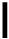

Most residential grid-tied solar systems consist of PV modules, an inverter to convert DC power to AC, an extra utility meter, and connections that allow excess power to flow back to the utility company-effectively turning back the energy meter.